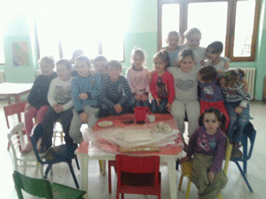

Obuka žena u Pustovanju Vune na radionici "Čarolije sa vunom" je održana u prostorijama MZ i trajala je u toku meseca Novembra i Decembra, članice udruženja su obučavane u izradi predmeta od vune, metodom starog zanata pustovanja. Tokom radionice primenjen je praktični pristup , koji se ogledao u praktičnom radu na izradi predmeta od vune. Uvodno predavanje odnosilo se na sam postupak pri izradi, dok je većina rada u radionici bila na ručnoj izradi predmeta od vune, primeni potrebnih alata i potrebnih predmeta za izradu delova od vune.

Drugi deo radionice obavljao se u predškolskoj ustanovi, sa decom iz zabavišta. Prvi časovi radionice su bili teorijski , gde je predavač Furtula Milanka, deci objasnila osnovne pojmove o vuni, načinu njenog dobijanja, njenoj svrsi i korisnosti za ljude. U nastavku radionice u toku meseca Novembra i Decembra na praktičan način su deca , primenom metoda pustovanja vune, izrađivala predmete od nje.
Treći deo radionice obavljao se sa decom iz škole. Prvi časovi radionice su bili teorijski , gde je predavač Furtula Milanka, deci objasnila osnovne pojmove o vuni, načinu njenog dobijanja, njenoj svrsi i korisnosti za ljude. U nastavku radionice u toku meseca Novembra i Decembra na praktičan način školska deca su izrađivala predmete od vune. Poštosu oni bili starijeg uzrasta, predmeti od vune su bili složeniji i bogatiji izradom sa kombinacijom obojenih fragmenata od vune.

Predmeti od pustovane vune, koji su učesnici radionice uradili, članice urduženja, deca iz zabavišta i škole.
Izložba radova u Titelu

Prezentacija Udruženja žena "Veliko Srce" na snimanju emisije "5kazanje" RTV , poseta brodom Carske Bare i poklon voditelju Boru Otiću, od strane članica Udrženja.